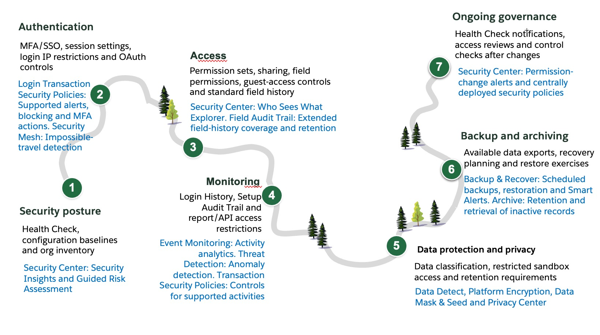

An illustrative roadmap for stronger Salesforce security

A step-by-step journey
The seven steps are not a required sequence and can be carried out in parallel. For example, backup and recovery does not need to wait for encryption. Prioritize activities according to risk, business needs and any implementation dependencies.
Step 01 of 07
Foundation: Assess posture with Health Check & Security Insights
Establish the scope, record the current settings and assign the first remediation actions.
OOTB controls
- Inventory the orgs, critical data, external sites, integrations and existing security capabilities.
- Run Health Check against an agreed Salesforce or custom baseline. Record the date, findings and baseline used.
- Configure Health Check score notifications; the setup and ongoing review are described in Step 7.
- Prioritize material gaps, test the proposed changes and re-run the assessment. Review Security Center Essentials where available.
Illustrative implementation steps
List each production org and its business owner, administrator, public sites, critical integrations and sensitive datasets. Include sandboxes and other copies of production data. Record which security features are already configured in each org so that the review starts from actual usage.
Review the user list for inactive or no-longer-needed accounts, then inspect profiles and permission-set assignments for unused or unnecessary access. Check ownership of records, scheduled work and integrations before disabling an account or removing an assignment. Use the access-review tools in Step 3 to investigate the grants that remain.
In Setup, open Health Check, select the Salesforce baseline or an agreed custom baseline, and save the date, score and individual setting results. Health Check compares configuration settings with that baseline: for example, when local passwords expire, the session timeout, browser protections and certificate settings. Work through the flagged settings with the relevant administrators. Record why a setting differs from the baseline and what changing it could affect.
Test configuration changes with affected users and integrations before applying them in production, then re-run Health Check. Record the setting changed, the remaining gap and the next action. Configure the automated notifications described in Step 7 so that later score changes reach the people responsible for the org.
How Guardian helps
Security Center: Inspect permissions and sensitive-data exposure
Connect the supported orgs to Security Center and check that the collected data is current. Use Security Insights to investigate questions beyond the configuration baseline: how many users can export reports, who has broad administrative permissions, and how widely sensitive fields can be accessed. Review the users and granting configurations behind a finding before deciding which access to remove. Data classification and scoring settings affect how the findings are interpreted.
Guided Risk Assessment: Add business context and authentication observations
Complete the org, authentication and data-protection questions in the Guided Risk Assessment. Review the resulting report for high-risk settings, broad permissions, data-export capabilities and observed authentication methods. For an assessment using a 90-day lookback, compare the users recorded under SSO with MFA, username/password with MFA, SSO only and username/password only. Reconcile SSO observations with identity-provider evidence before treating a category as proof that a user bypassed MFA.
Turn each material finding into a specific change. If too many users can export reports, review the assignments and narrow them in Step 3. If observed login methods do not match the intended MFA policy, investigate the affected login paths in Step 2. Re-run the relevant analysis after remediation.
Step 02 of 07
Authentication: Secure entry for users, integrations & AI agents
Secure the login and authentication paths used by employees, administrators, integrations and AI agents.
OOTB controls
- Track the Salesforce security enforcement roadmap, check each org’s rollout status and address required authentication, connection, sending-email and report-action changes.
- Verify MFA on applicable interactive login paths, including assurance through the identity provider when using SSO.
- Use appropriate phishing-resistant authentication for privileged users. Test emergency access and account recovery.
- Review session timeouts, high-assurance requirements and appropriate login IP restrictions. Test legitimate access before rollout.
- Review connected apps, OAuth access, integration credentials and AI-agent identities separately from employee login. Remove unused access paths.
Illustrative implementation steps
Track enforced changes and local recommendations
Use the Salesforce security enforcement roadmap to check enforcement separately from recommended local hardening. The published dates below are rollout information, not confirmation of a particular org’s configuration. Check the linked control’s scope, exceptions and org-specific schedule before planning a change.
| Control | Published production rollout |
|---|---|
| Employee MFA and phishing-resistant MFA for privileged users | Production rollout started 20 July 2026; consult the org’s release-group schedule. |
| High-risk connections | Connected-app/API enforcement started 24 April 2026. |
| Extended login-anomaly containment | Enforcement started in early April 2026. |
| Sending-email domain verification | Production phase 1: 5 May–1 June 2026. Allowlisted domains: 29 June–27 July 2026. |
| Time-based report-action step-up | Production enforcement started 1 July 2026, staggered over approximately 30 days. |
| Anomalous-report-export step-up | Production enforcement started 13 July 2026. |
| Transaction Security Policy changes | Production enforcement started 13 July 2026. Implementation details are in Step 4. |
For each org, record the applicable control, published status and date, local configuration, remaining action and owner. Resolve any gaps in controls whose rollout has already started. Keep risk-based choices such as additional login restrictions and session settings identified as local recommendations rather than Salesforce-wide enforcement deadlines.
Include the identity and integration owners in login and connection tests. For sending-email verification, identify the domains Salesforce sends from and check their verification state. Test report viewing and exports with the affected users so they can complete the required step-up authentication.
Secure employee and administrator login
List the login paths actually used: direct Salesforce login, SSO through the identity provider, mobile access and emergency administrator access. Check how MFA is enforced on each applicable interactive path. For SSO, review the identity provider policy and its exceptions, including users or applications that can still use a different login route.
For privileged users, use phishing-resistant authentication supported by the chosen login method. Test account recovery and the emergency access process before tightening restrictions. Keep emergency credentials under controlled access and record their use.
Review session timeouts, high-assurance requirements, login hours and login IP restrictions for the relevant user groups. Test office, remote and mobile access before rollout. Distinguish trusted network settings from restrictions that actually prevent login; record the purpose of each setting.
Identify how AI agents authenticate
List each agent, its channel and the systems it calls. For each action, identify whether it runs as the signed-in user, an assigned agent user or another integration identity. Inspect the credentials used by external actions and test revocation. Apply the relevant interactive-login controls to the people using the agent, and manage machine credentials through their supported authentication flow. Review what each identity can see and do in Step 3.
Secure integrations and non-human identities
Inventory connected apps and external client apps, OAuth grants, service accounts, named and external credentials, and active outbound connections. Give each integration an owner and a stated business purpose. Identify the Salesforce records and operations it needs, then narrow its permissions and OAuth scopes accordingly.
Give each system-to-system integration a dedicated identity and only the object, field and operation permissions it needs. For API-only integrations, use the Salesforce Integration user license and Minimum Access – API Only Integrations profile where appropriate, then grant the required access through permission sets. API-only access restricts the channel; the assigned permissions still determine what the integration can do. Review any use of a full System Administrator profile and replace unnecessary privileges with specific grants. Follow the integration-user setup guidance.
Review apps that act on behalf of an interactive user separately from unattended integrations. Record who manages secrets, certificates and refresh tokens, and test credential rotation and revocation with the integration owner. Review the destination and downstream handling of exported data. Remove abandoned connections and unused grants after checking dependencies.
How Guardian helps
Use Event Monitoring and Transaction Security Policies for login controls
Create LoginEvent Transaction Security Policies for the conditions the organization wants to control, such as login country, source IP or session assurance. Select a supported notification, block or MFA action and test both expected and prohibited login scenarios. For example, require an MFA challenge on a supported UI login when the selected conditions indicate insufficient session assurance. Follow the event conditions and supported actions; the wider policy setup and TSP Accelerator are covered in Step 4.
Use Security Center Security Mesh to investigate impossible travel
Use the documented impossible-travel detection in Security Mesh to flag account access from distant locations within an implausibly short interval. Review the related Salesforce activity and account for VPN or proxy effects before deciding whether the account is compromised. Step 4 covers the Security Center, Data 360 and external-feed setup for cross-system investigation.
Step 03 of 07
Access: Control what users and agents can see and do
Move toward a minimum-privilege model and establish the field history needed for investigation.
OOTB controls
- Start with an appropriate minimum profile, then grant access through task-based permission sets and permission set groups.
- Review View All Data / Modify All Data, object-wide View All / Modify All, field permissions, sharing and export access separately.
- Secure guest and external-user access. Review integrations, custom code and automation, and test required tasks and prohibited actions.
- Remove redundant grants and unused assignments. Enable history for selected business fields; extended retention and wider coverage are covered under Field Audit Trail in “How Guardian helps” below.
Illustrative implementation steps
Migrate sales users to minimum privilege
Start with the work a sales user must perform: create and convert leads, maintain opportunities, view the right accounts, run reports and carry out approved exports. List the required objects, fields and records for each task. Include managers and specialist sales roles so that their additional needs are explicit.
Capture the existing profiles, permission sets, permission set groups, roles, sharing rules and assignments before making changes. Use an appropriate minimum profile, such as Minimum Access – Salesforce, and check its actual grants. Preserve the required login settings, page layouts, default apps and record types. Build task-based permission sets and combine them into groups for each sales role, following Salesforce’s profile and permission guidance.
Use the free User Access and Permissions Assistant (UAPA) from Salesforce Labs to analyze who has a permission and how it is granted, report on broad access, and convert profiles into editable permission sets. Follow the installation and Tooling API setup in a sandbox first. Review the converted grants against the sales tasks; copying existing permissions does not remove excess access.
Review View All Data and Modify All Data, object-wide View All / Modify All, broad field access, export permissions and API access. Trace each permission back to every profile, permission set or group that grants it. Salesforce permissions are cumulative: changing the profile will leave grants from other assignments in place. A muting permission set affects its own group; it does not cancel the same permission granted elsewhere.
Design record access through organization-wide defaults, ownership, roles, teams and sharing rules according to the sales process. Check which records a manager needs and how that access is granted. Review field permissions separately, including confidential fields that should stay inaccessible in reports and API responses. Keep exceptional export or administrative access in separate, justified assignments.
Pilot the proposed model with representative sales users and managers in a sandbox. Test lead conversion, opportunity updates, report access and approved exports, as well as attempts to view another team’s restricted records or sensitive fields. Fix each missing permission narrowly, retain a rollback route and expand the migration in groups. Update provisioning so that a role change removes obsolete assignments as well as adding the new ones.
Review field access and permission dependencies
Open Setup → Object Manager → select an object → Field Access, then select a sensitive field. Use the Summer ’26 Field Access Summary to inspect read and edit grants across permission sets, permission set groups and profiles. Open the granting configuration to make changes. Check the affected users and their record access as well; a summary of configured field grants does not establish every route through which data can be accessed.
When changing user permissions, object permissions or assigned apps in the enhanced profile interface, review the additional permission-dependency changes surfaced during the save process. Check the resulting access before continuing the migration, including broad permissions such as View All Fields. Keep the intended change and any dependent changes together in the change record.
Automate assignment and removal with User Access Policies
Use User Access Policies to apply a defined set of grant or revoke actions. For a migration, run a manual policy against a reviewed set of users. For ongoing provisioning, configure an active policy to run on user creation or update, with criteria such as role or department. Start with a small group and inspect the policy’s recent access changes.
Define revocation actions for role changes and departures as well as grants for new duties. Do not assume that leaving a policy’s matching criteria automatically removes earlier assignments. Review policy order: when multiple active policies match, the one with the lowest Order value applies. Test new users, movers and leavers, including exceptions and users who already have direct assignments.
Secure guest and external-user access
Inventory every public site and domain, its guest user identity, owner and business purpose. For each site, list the records, fields, files and actions that should be public. Disable obsolete sites and remove public links that no longer serve an approved purpose.
For supported sites, open Setup → Guest User Sharing Rule Access Report and review each site’s sharing rules and exposed objects, records and fields. Follow the guest-access report guidance when interpreting counts and omitted objects. Review guest object and field permissions, sharing-rule criteria, user-information visibility and ownership of guest-created records. Check public file links and content distribution separately.
Test the site in a clean browser session with no authenticated user. Check that the intended public content works and that confidential test records, fields, downloads and actions remain inaccessible. Include direct links to known test records and files within the agreed test scope. Review guest-accessible Apex, pages, components and Flows for server-side authorization.
Review authenticated customer and partner users separately. Test with users from two different customer or partner accounts to check that each sees only the records and files intended for them. Include delegated administration and any deliberate cross-account access. Re-run affected checks after changing site content, sharing rules, fields, files or custom code.
Secure custom development and automation
List the Apex, Visualforce, Lightning components, Flows and package entry points that read sensitive data or perform significant actions. Identify the caller, execution identity, sharing behavior and database access mode, including the Apex API version. Check record sharing and object and field permissions separately, using the current Salesforce secure Apex guidance.
Review query construction, input validation, credentials, outbound destinations and sensitive values written to logs. Test required operations and denied operations with ordinary users, guests and integration identities where relevant. Include bulk updates and failure paths so that error handling does not bypass access checks or repeat unintended actions.
Constrain agent actions and data access
For each agent action, list the objects, fields, records and operations it needs. Review the permissions of the executing identity and the authorization checks in any invoked Flow, Apex or API. For example, a sales agent that summarizes an opportunity should not also receive unrestricted customer-data export or bulk-delete authority.
Test requests to access another customer’s records, retrieve a restricted field or perform an unapproved action. Confirm that the underlying permissions and action implementation deny the request; a conversational instruction alone is not an access control. Require human confirmation for the material actions selected by the business, and test the action’s failure and retry behavior.
Remove obsolete privileged access and begin field history
Identify administrators and privileged service accounts from their effective permissions. Remove unused grants, give temporary exceptions an end date and test what happens when someone changes roles or leaves. Include direct assignments, provisioning failures, active sessions and connected-app tokens in that review.
Enable available field history for the business fields needed to investigate changes and record when capture begins. Choose fields such as an approval status, account ownership or a sensitive commercial value according to the actual process. Make a controlled change and inspect the resulting history. Plan longer retention and wider coverage in the Guardian section below.
How Guardian helps
Investigate access with Security Center
Use Who Sees What Explorer and the relevant Security Insights analysis to investigate access before the migration and inspect it again afterward. Native access summaries and UAPA help administrators inspect and change grants; Security Center adds posture analysis, visibility across connected orgs and selected change alerts for continued oversight.
After establishing the intended access, configure the permission-drift alerts described in Step 7 to identify later high-risk assignments.
Configure Field Audit Trail
Select supported objects and fields based on the changes the business needs to investigate. Enable tracking, record the capture start date and configure the applicable history retention policy, including archive timing, access and retention. Make a controlled change and retrieve the history through the supported interface. Check archived-history retrieval once the archive process has run.
Field Audit Trail covers selected fields from the time tracking is enabled, with old and new values where supported. It cannot supply earlier changes. See Step 4 for using field history in an investigation and the separate evidence needed for historical report contents.
Step 04 of 07
Monitor & alert: Detect threats and block risky data exports
Monitor security, application performance and adoption; investigate suspicious activity and apply controls to risky exports.
OOTB controls
- Review available Login History, Setup Audit Trail and field history. Record what they capture and how long it is available.
- Restrict unnecessary report export and API access. Document activity that the available logs cannot establish.
- Assign review, investigation and escalation responsibilities. Preserve relevant evidence and rehearse a response.
Illustrative implementation steps
Write down the questions an investigator needs to answer: who logged in, which security settings changed, which tracked business values changed, and what evidence exists for suspected export activity. Match each question to the logs available in the org. Record their coverage, collection dates and retention limits.
| Source | Available history and action |
|---|---|
| Setup Audit Trail | Download the past 180 days of configuration history. The Setup page displays the 20 most recent changes. Retain required records before the 180-day expiry. |
| Login History | Download the past 6 months of login records, including API logins. Store the required history before it leaves that window. |
Use the field history configured in Step 3 to investigate changes to selected business fields. Correlate the relevant record, field, actor and time with available activity evidence. Protect exported logs and history because they can contain user identifiers and details about business activity.
Define who investigates an alert, preserves the relevant records and authorizes actions such as revoking a session or disabling an integration. Walk through a controlled scenario with the response team, using the logs they would actually have. Record missing evidence and the next source to consult.
If an investigation requires the exact contents of an earlier report or export, preserve that output and its definition or filters at the time. Field history can help explain tracked changes, but it does not capture the earlier report’s full membership or output. A later report run and Field Audit Trail alone cannot establish precisely what the earlier report contained.
How Guardian helps
Enable the required event collection
| Source | Operational use |
|---|---|
| Event Log Files (ELF) | Downloadable activity files, with daily and supported hourly generation. Collect the files and account for processing delays. |
| Event Log Objects (ELO) | Queryable event records, separate from streaming. Check event coverage, availability delay and source retention. |
| Real-Time Event Monitoring (RTEM) | Supported event streams and associated storage for monitoring and response. Configure storage and streaming separately. |
In Event Manager, inspect the event types needed for the investigation scenarios. Check RTEM storage and streaming separately and enable the missing settings for those events. Provisioning alone does not establish that the required events are being stored. Generate a safe test activity and check that the expected record reaches the selected storage or subscriber.
Start with the prebuilt Event Monitoring analytics dashboards
Event Monitoring provides prebuilt analytics for security, application performance and user adoption. Enable CRM Analytics and complete the setup for the dashboard offering you plan to use. Confirm that the relevant event data is available and that the people reviewing it have the required access.
The Event Monitoring Analytics app includes prebuilt dashboards such as User Logins, Login-As, Report Downloads, API, Lightning Performance and Lightning Adoption. Start with User Logins and Report Downloads to examine who is accessing the org and exporting reports. Use the performance and adoption views to identify slow interactions and understand how the application is being used.
Event Log Objects Analytics adds dashboards for Threats & Access, Performance & Health, and User Behavior & Adoption. Use them to investigate security activity, troubleshoot Lightning/Apex/API performance, and examine usage patterns and user journeys. Follow Salesforce’s dashboard overview and setup guidance. Filter to a known user and time period, inspect the underlying activity and check the data’s freshness before interpreting a trend.
Retain activity for historical analysis
Check generation and retrieval of the required Event Log Files (ELF) and access to supported Event Log Objects (ELO). Record the source, coverage, collection frequency and retention for each. Set up regular ingestion into an operated SIEM, an appropriately persisted CRM Analytics dataset or another approved historical store.
For an ELO connection through Data Cloud / Data 360, confirm the supported connector, the actual events ingested and the destination retention settings. A connection or dashboard alone does not establish long-term storage. Assign ownership of collection failures, retries and access to the retained data, then retrieve an older event through the analyst’s normal workflow.
Review Threat Detection events
Use Threat Detection to investigate credential stuffing, session hijacking, report and API anomalies, and supported guest-user and login anomalies. Review the event’s context before treating it as a confirmed incident. Configure supported notifications, Transaction Security Policies or event-triggered Flows, and assign an investigator. Detection and response are separate: an anomaly event does not mean every suspicious action was automatically blocked.
Correlate signals with Security Mesh
Use Security Mesh in Security Center with Data 360 to bring together supported Salesforce and external signals. The documented sources include RTEM, Okta ISPM user data, CrowdStrike endpoint data and DigitSec scanning data. Connect the relevant feeds and check collection, identity matching and timestamps before relying on a combined view.
Illustrative correlation: CrowdStrike flags a compromised endpoint. Okta ISPM supplies identity context, and Salesforce RTEM shows a large report export during the same period. Match the identity, endpoint and timing to investigate whether the export is associated with that compromise. The combined view helps the responder assess the Salesforce activity alongside the endpoint finding; the correlation still needs to be configured and validated.
If the SOC works in a SIEM, define an integration to send the supported findings and relevant context into its investigation workflow, and validate the available export or API path. Include the matched identity, affected org, time window and references to supporting events where available. Treat that delivery as integration work, rather than assume that Security Mesh automatically forwards enriched findings. Retain the underlying events needed to investigate the conclusion.
Transaction Security Policies
Implement Transaction Security Policies (leverage the TSP Accelerator from Salesforce Labs). Select policies for the risks being addressed, such as inappropriate bulk exports or unexpected API activity. Review each template’s event conditions, supporting components and available actions in a sandbox. Adjust thresholds and exceptions to the organization’s normal workloads.
Review the 2026 TSP enhancements with the administrators who manage policies. They need Modify Transaction Security Policy together with Customize Application; policy-management actions in the UI also require step-up authentication when the authentication period has expired.
Check whether the default ReportEvent policy has been deployed or enabled in the org. It challenges internal-user report exports through the UI when they exceed 10,000 records; it is not an API-export policy. Existing ReportEvent policies and edits to the default affect automatic deployment or enabling, so inspect the actual configuration. The policy remains editable after enforcement.
Test both an approved activity and the activity the policy is intended to catch. Confirm alert delivery and the actual challenge or blocking behavior supported by the event and access path. Identify the responder and the procedure for disabling or correcting a disruptive policy before rolling it out. Review early results with the affected business and integration owners.
Step 05 of 07
Data protection & privacy: Protect sensitive data across its lifecycle
Identify and protect sensitive data, limit its use and copies, and carry out approved privacy and retention decisions.
OOTB controls
- Classify sensitive fields and datasets with their owners. Reduce unnecessary collection, access and exports.
- Limit sandbox and test-data exposure. Review copies, integrations and downstream uses of sensitive information.
- Define retention, deletion and exception requirements. Establish how privacy requests are verified and fulfilled.
Illustrative implementation steps
Identify sensitive data and reduce unnecessary copies
Work with data owners to identify sensitive fields, files and free text. Record the purpose of collecting each category, who needs access and where the data is copied or exported. Include integrations, downloaded reports and test environments. Use the findings to narrow access and remove unnecessary collection or copies.
Review sensitive data used by AI agents
Map the records, files and knowledge sources an agent can retrieve, along with the prompts, outputs, logs and external tools that may receive the information. Remove unnecessary sensitive data from those paths and review access to retained conversations and logs. Test whether a request or malicious instruction in retrieved content can cause confidential information to be disclosed to the wrong person or destination.
Secure sandboxes and test data
Define the records and relationships needed for testing before refreshing or seeding a sandbox. Use synthetic data where it supports the test. When production data is needed, decide how it will be protected and limit access until that work is complete.
Review outbound email, notifications, scheduled jobs and integrations in the refreshed environment. Prevent tests from contacting real customers or sending production information to an unintended destination. Check files, attachments and free-text content as well as structured fields. Test that the protected dataset still supports the intended business workflows.
Handle requests about personal data
Define how a request is received, how the requester’s identity is checked and who approves the action. Locate the relevant records across the org, integrations, exports and archives. Carry out the approved access, deletion or anonymization action, record any retained data and the reason, and check that downstream teams complete their part. Include backup handling in the procedure so that a later restore does not silently undo a completed privacy action.
Apply retention and deletion decisions
Document how long each data category is needed, what triggers removal and which exceptions require retention. Include holds, downstream copies and archived data in the decision. Test deletion or anonymization on representative records so that required relationships and business processes are understood before production changes.
How Guardian helps
Classify fields and inspect their contents
Use Security Center Data Classification to find unclassified fields and apply agreed sensitivity or compliance labels in bulk. These labels describe field metadata. Follow the Security Center classification guidance and have data owners review the proposed labels.
Run Data Detect over the selected scope to find sensitive values that field names or existing labels may miss. Review matches and false positives with data owners, reconcile the classification labels, and assign a handling decision: narrow access, remove unnecessary data, mask a test copy or include the field in an encryption policy. Scan findings inform those decisions; a clean scan does not prove that every value is non-sensitive. See Data Detect capabilities.
Platform Encryption
Platform Encryption protects data at rest. Field-level encryption operates at the application tier; DBE protects the transactional database at the data tier. TLS handles transport protection separately. It does not provide in-memory encryption or replace access controls. See Platform Encryption concepts.
Identify the stores and fields that need protection and assign responsibility for keys, rotation and recovery. For eligible Database Encryption (DBE), follow the database encryption setup, test the planned change and enable encryption through the supported settings. Track processing of existing data through completion and check the resulting coverage.
For field-level encryption decisions, run Encryption Analyzer for the applicable fields and review effects on queries, reports, automation and integrations. Treat field-level encryption and DBE as separate configuration decisions. Encryption does not remove an authorized user’s ability to read or export data.
Data Mask & Seed
Data Mask changes the selected underlying sandbox values through replacement, scrambling or deletion; it is not a screen-only filter. Masked values cannot be unmasked by toggling a display setting. The process runs within Salesforce and does not alter production data. See the Data Mask mechanics and platform-native processing guidance.
Configure masking and seeding around the test scenarios and relationships the team needs. Keep developer and tester access restricted until the masking job completes. Inspect representative records, related data and areas outside the selected masking scope, then check that the intended tests still work.
Privacy Center: Manage retention and privacy requests
Use Privacy Center to configure data-management policies for supported deletion, masking and retention actions. Start with a limited set of objects and test the record-selection criteria, related records, exceptions and holds. Schedule the policy and review its job results, including records that were skipped or failed. Follow the Privacy Center implementation guidance.
For an approved individual request, configure and test the relevant Right to Be Forgotten or portability policy. Confirm that it finds the intended person’s records and that the output or deletion matches the approved scope. Track remaining work in connected systems and archives separately; a completed Salesforce job does not establish that every copy has been handled.
Step 06 of 07
Backup & archive: Back up, restore and archive your data
Back up data and configuration for recovery, and archive inactive records that must remain available under the retention policy.
OOTB controls
- Document past issues, failure scenarios and recovery options.
- Map the data, files, metadata and relationships needed to recover the service.
- Assess the available export or backup approach and document coverage gaps, retention and the restore procedure.
- Identify inactive records to archive and define their retention, retrieval and access requirements.
- Run a safe recovery exercise and verify data integrity, relationships, access and required business behavior.
Illustrative implementation steps
Separate backup and archive requirements
A backup provides a recovery copy for unwanted deletion, corruption or change. An archive retains selected inactive records outside the live workload for approved business or retention needs. Define both requirements: which previous state must be recoverable, and which inactive records must remain retrievable. Apply the privacy and retention decisions from Step 5 to both copies.
Document past issues, failure scenarios and recovery options. Review known operational problems with the administrators and business teams, then list plausible scenarios such as an accidental bulk deletion, an integration overwriting good data, a faulty release or the loss of access to a critical dependency. For each scenario, identify the affected process and the records, files, configuration and relationships needed to restore it.
List the recovery options available for that scenario: supported undelete, a retained data export and re-import, a previous metadata version, an existing backup service or reconstruction from an authoritative upstream system. Record what each option covers, how far back it can reach, its dependencies and any manual work required. Check whether the option remains usable when the affected integration or identity service is unavailable.
Data Export: generate and retain CSV exports manually or on a supported weekly/monthly schedule. Select the required files and content as part of the export, download the output and protect it. Delivery can be delayed, and the export is not a complete configuration backup or an automatic restore process. Document how records and relationships would be rebuilt from it. See Export Backup Data.
Recycle Bin: retained deleted items can be restored during the 15-day window. After that, Salesforce schedules them for permanent deletion without guaranteeing the exact purge time. Emptying the bin or permanently deleting an item can remove the option sooner. This does not recover ordinary overwritten field values. See Recycle Bin behavior.
Choose a representative scenario and rehearse recovery in a suitable test environment. Follow the restore procedure, check relationships and access, and confirm that automation and integrations behave correctly after recovery. Record elapsed time, missing items and manual corrections. Use those findings to improve the procedure and identify gaps in the available recovery options.
How Guardian helps
Backup & Recover: Configure the backup
In Backup & Recover, configure the supported data and metadata scope, schedules, retention, access and failure notifications. Complete the first backup and inspect exclusions or failed items against the recovery scenarios. Assign any uncovered data, files or configuration to another recovery option.
Detect unusual deletions and modifications
Configure Smart Alerts for selected objects to flag unusual deletion or modification volumes. Choose useful thresholds or statistical-outlier rules, set the recipients and review alerts against the backup comparison. Statistical detection depends on the observed change pattern and a new backup; it is not an immediate block on a deletion.
Route a suspected bulk deletion to the response owner identified in Step 4. Compare the affected records and timing with available activity evidence, decide whether to contain the source of the change, and select the appropriate recovery option.
Backup & Recover: Restore a representative scenario
Use a completed backup to rehearse one of the documented scenarios in a suitable test environment. Check the restore scope, relationships, ownership and business behavior, then record the time and manual work involved. Include the backup operator and the relevant application or integration owners so the procedure covers the dependent work.
Archive: Retain and retrieve inactive records
Define which inactive records can leave the live org, how long they must remain available and who needs to retrieve them. Check related records, reporting needs and downstream dependencies before running archive jobs. Test retrieval of representative archived information and document how it fits into retention and recovery procedures.
Step 07 of 07
Governance: Detect drift and maintain agreed controls
Use automated notifications and access reviews to identify configuration changes, permission drift and failed protection jobs.
OOTB controls
- Configure automated Health Check score notifications and investigate the settings behind a reported change.
- Recertify access, remove unused identities and grants, and review expiring exceptions.
- Re-test affected controls after releases, new integrations, schema changes, sandbox refreshes and changes to business processes.
- Repeat response and recovery exercises. Report verified closure, stale evidence and unresolved gaps.
Illustrative implementation steps
Configure automated Health Check score notifications
Open Setup → Health Check and configure the notification recipients. Use Notify all System Admins and/or add the relevant users and email addresses under Recipients, then save. The emails bring score changes to the administrators and security team without requiring them to repeatedly open the page. Salesforce’s notification guidance describes weekly alerts when the score decreases; do not treat them as immediate detection of every configuration change. Confirm delivery and review the changed settings against the selected baseline.
Review access and recheck controls after change
Set review dates for Health Check findings, privileged access, guest sites, integrations and temporary exceptions. Assign each recurring task to a named team or owner. Keep the actions in the same list used for the initial assessment, with enough detail to show what changed and what still needs attention.
Build the relevant checks into changes the team already makes. Recheck field-history coverage when fields or business processes change; a public-site release needs guest-access tests; a sandbox refresh needs data protection and outbound-connection checks. Revisit recovery procedures when objects, files, integrations or business processes change. After changing an agent’s actions, retrieval sources or executing identity, repeat the unauthorized-access and data-disclosure scenarios from Steps 3 and 5.
Review User Access Policy results after changes to roles, departments or provisioning rules. Check both newly granted access and removal of obsolete assignments, including exceptions. Revisit the Step 2 enforcement roadmap and update each org’s status when Salesforce changes a rollout or the local configuration changes.
Review recurring failures and overdue actions with the teams responsible for them. Repeat response and recovery exercises using current systems and contacts. During an org migration or consolidation, carry forward required permissions, retained logs, field history and recovery procedures, then check their behavior in the destination org.
How Guardian helps
Security Center: Alert on permission drift
Configure Security Insights alerts for high-risk system permissions. For example, select Modify All Data and the rule for a system permission assigned to users. Also review the rule for permissions assigned to profiles, permission sets or permission set groups. Follow the alert setup guidance and subscribe the relevant reviewers.
When an alert identifies a new broad grant, inspect the affected user and the profile, permission set or group supplying it. Compare the change with the approved duties and remove an unintended grant from the source. Test the alert with a controlled assignment and check its timing against the scheduled analysis. This monitors drift from the access model established in Step 3; it does not itself block the assignment.
Apply agreed settings across connected orgs
Use Security Center Security Policies to define supported settings centrally and deploy them to selected connected tenants. Examples include session settings, trusted IP ranges, password configurations and Health Check baselines. Test the policy, review local exceptions and inspect deployment results. Deployed values overwrite existing target settings; continue monitoring for later changes. Follow Define and Deploy Security Policies.
Review collection, detections and protection jobs
Schedule supported Security Center analyses and snapshots, check that collections are current, and confirm that selected alerts reach the responsible team. Review Security Mesh feed failures, Threat Detection response routing, disabled Transaction Security Policies and changes to thresholds or exceptions.
Review Data Detect findings and changes to encryption or Field Audit Trail coverage. Check masking, privacy, archive and backup job results and follow up on failures. Update the relevant configurations when new fields, objects, sites or integrations are introduced.